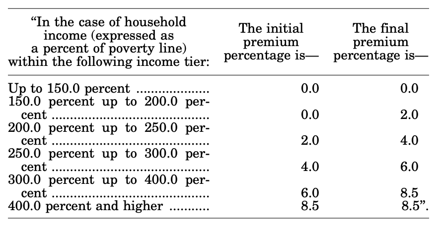

Featured Pages
Fixing Family Benefits
The Family Security Act


*Numbers would be rounded when filing taxes or receiving benefits
Not included are the child support deduction, excess shelter deduction, the dependent care deduction (which includes only expenses related to work or training) and deduction alterations for households with an elderly or disabled member. Additionally, some people are eligible for SNAP through categorical eligibility (e.g. people who receive cash benefits through TANF are automatically eligible for SNAP), which does not include a gross income limit. This chart does not show marginal tax rates for the small proportion of SNAP recipients who are categorically eligible for SNAP and have gross incomes above 130% of the poverty line.
SNAP is based around the idea that recipients should dedicate 30% of their income towards food purchases, with SNAP making up any shortfall between the 30% contribution and the amount of money needed to purchase a "nutritionally adequate low-cost diet".1 Consequently, the SNAP benefit formula takes a maximum benefit, defined as the amount of money needed to purchase a nutritionally adequete low-cost diet for a particular household size, and then subtracts from that 30% of net income: $$\text{Benefit} = \text{Maximum Benefit} - \text{30% of Net Income} $$
In 2022, maximum benefits were:2
| Family Size | Maximum Benefit | Maximum Possible Annual Benefit |
|---|---|---|
| One | $250/month | $3,000 |
| Two | $459/month | $5,508 |
| Three | $658/month | $7,896 |
| Four | $835/month | $10,020 |
| Five | $992/month | $11,904 |
Note that these are the values for the 48 contiguous states and Washington D.C. They differ for Alaska, Hawaii, Guam, and the US Virgin Islands. SNAP is not available in Puerto Rico, American Samoa, or the Northern Mariana Islands.
Net income is calculated by subtracting from gross income a number of deductions. I include the two universally-available deductions: the SNAP standard deduction (this is separate from the standard deduction used for personal income tax) and the earned income deduction, which allows recipients to deduct 20% of their gross income. Some recipients can use additional deductions, like the deduction for court-order child support, but we will not consider them here. This results in the following formula for net income: $$ \text{Net Income} = \text{Gross Income} - .2 (\text{Gross Income}) - \text{Standard Deduction} = .8 (\text{Gross Income}) - \text{Standard Deduction}$$
In 2022, SNAP standard deductions were:3
| Family Size | Monthly Standard Deduction | Annualized Standard Deduction |
|---|---|---|
| Three or less | $177/month | $2,124 |
| Four | $184/month | $2,208 |
| Five | $215/month | $2,580 |
Note that these are the values for the 48 contiguous states and Washington D.C. They differ for Alaska, Hawaii, Guam, and the US Virgin Islands. SNAP is not available in Puerto Rico, American Samoa, or the Northern Mariana Islands.
We can now establish a formula for SNAP benefit values. With \( B_{max} \) the maximum benefit and \(SD\) the standard deduction, a person's SNAP benefit \(B\) at gross income \(I\) equals $$ B(I) = B_{max} - .3 (.8I - SD) $$
The effective marginal tax rate is calculated by considering the reduction in benefits as a result of an additional dollar of gross income, \( \Delta B = B(I+1) - B(I) \). This works out to: $$ \Delta B = B_{max} - .3 (.8(I+1) - SD) - (B_{max} - .3 (.8I - SD)) = -$0.24 $$
A $1 increase in income thus results in a $0.24 loss in benefits, which means the effective marginal tax rate is 24%. Intuitively, you can think of it this way: when gross income increases by $1, the 20% earnings deduction rises by $0.20, resulting in additional net income of only $0.80. Since recipients are required to dedicate 30% of their net income to food purchases, the overall result of a $1 increase in gross income is a .3($0.80)=$0.24 decrease in benefits.
There is one additional consideration we must take into account. While SNAP's benefit formula naturally phases down to $0, SNAP also includes both a gross income max and a net income max. SNAP eligibility abruptly cuts off if gross income exceeds 130% percent of the poverty line or if net income exceeds 100% of the poverty line. These limits are listed by family size in the table below.4
| Family Size | Gross Income Limit | Maximum Possible Annual Gross Income | Net Income Limit | Maximum Possible Annual Net Income |
|---|---|---|---|---|
| One | $1,396/month | $16,752 | $1,074/month | $12,888 |
| Two | $1,888/month | $22,656 | $1,452/month | $17,424 |
| Three | $2,379/month | $28,548 | $1,830/month | $21,960 |
| Four | $2,871/month | $34,452 | $2,209/month | $26,508 |
| Five | $3,363/month | $40,356 | $2,587/month | $31,044 |
For many recipients, these income maxes result in a benefit cliff (i.e. a point at which their benefit suddenly drops to zero even though their calculated benefit under the benefit formula is positive).
SSI imposes a very high marginal tax rate. Nominally, it is 100%: every dollar of earned or unearned income (unearned includes in-kind benefits like food and shelter provided by other people) results in a $1 reduction in SSI benefits. However, SSI excludes the first $20 made of any income (earned or unearned) in a month, the first $65 of earned income made in a month, one-half of earned income above the first $65 of earned income plus any remainder from the $20 exclusion, and several quarterly exclusions for infrequent or irregular unearned income.(supCRS SSI Long: 17) (Note that these figures are not adjusted for inflation each year—they have been the same since 1972).(supCRS SSI Long: 18) So the gist here is that countable income—income after exclusions—has a 100% marginal tax rate. However, gross income—income before exclusions—does not, because some of it is exempted.
This chart deals specifically with labor income, which means that it is assumed that the income the user inputs is entirely earned income. To keep things entirely within the realm of labor income, we will not include the $20 exclusion, since this can be applied to non-labor income. So, for the purposes of our calculations, we exclude the first $65 of monthly income plus one-half of additional monthly income.
Our chart looks at income on an annual basis, while SSI is based on monthly income. This requires some simplifications to make the monthly benefit appear as a single, annual curve. I assume that income is uniform over the year, i.e. if someone has an income of $12,000 then it is assumed that they made $1,000 each month. This allows us to take the monthly benefit and monthly exemptions and multiply them by 12 to get annual figures. Note that this will deviate from many people's actual benefits. A person who made all of their annual income in one month and none in the remaining 11, for instance, would only get to exclude $65 and one-half of the remaining, while under our assumptions we would calculate that they were able to exclude $780 and one-half of the remaining. In practice, though, these differences are small enough that they hardly register on the chart.
Note also that this chart does not take into consideration asset tests. SSI has a $2,000 asset limit for individuals and a $3,000 asset limit for married couples in which both spouses are SSI-eligible. Assets include "cash or other liquid assets or any real or personal property that an individual (or spouse, if any) owns and could convert to cash to be used for his or her support and maintenance".(sup: CRS SSI Long) SSI excludes one car and a house from the asset test (how, you might ask, is someone supposed to buy a car or a house when they can never save more than $2,000?). These asset limits can disqualify people that our chart would show receive an SSI benefit, since we are only considering income. Consider, for instance, an individual who receives the max benefit of $841/month. Over six months, they would receive $5,046. If they were to save $2,100 of that, then the next time SSI eligibility is checked it will be noticed that this person's bank account exceeds $2,000 and benefits will be cut off, even if they otherwise satisfy the income requirements. Our calculations do not consider this possibility. If you would like more information on asset tests, see the page Asinine Asset Tests.
With these considerations in mind, we can now go about determining the benefit values and effective marginal tax rates of SSI for labor income. SSI has a maximum benefit, adjusted for inflation each year. In 2022, these figures were:8 (fix sup)
| Household Type | Maximum Benefit | Annualized Maximum Benefit |
|---|---|---|
| Individual | $841/month | $10,092 |
| Married Couple | $1,261/month | $15,132 |
Note that the married couple maximimum only applies if both spouses are eligible for SSI. A person who is married to someone who is non-SSI-eligible receives the individual benefit. This benefit schedule also has one very bad, probably unintended consequence: it imposes an appreciable marriage penalty on disabled people. It does this in two ways. First, the maximum benefit is not double the individual benefit. Imagine two disabled people who are dating but not married. If they both receive the maximum benefit, then they receive a combined total of \( \$841 \times 2 = \$1682 \). However, if they were to marry, their benefit would drop to \( \$1261\), a $421 decrease. Over the year, that's up to $5,052 of lost income as a result of getting married. The second way SSI imposes a marriage penalty is by not doubling the first-of-the-month exemption. Both individuals and married couples have a $65/month earned income exemption, so getting married halves the exemption the couple receives. While we're on the topic, I'll add that the asset test also imposes a marriage penalty: it is $2,000 for an individual and only $3,000 for a married couple, meaning that a disabled couple would see their asset limit cut by 25% if they were to marry.
The SSI benefit is calculated by subtracting countable income from the maximum benefit. Since we're assuming that annual income is uniform over the year, we can say that the annual exclusion on labor income is \($65 \times 12 = $780 \). And since 50% of earned income after the first-of-the-month is exempted, i.e. countable income rises by only $0.50 for every dollar of labor income, the benefit \(B\) at gross income \(I\), with \(B_{max}\) denoting the max benefit, is: $$B(I) = B_{max} \text{ if } I \leq \$780 $$ $$B(I) = B_{max} - .5 (I - 780) \text{ if } I> \$780$$
For our effective marginal tax rates, since the first $780 of income is excluded, there is no decrease in SSI benefits for the first $780 in labor income. That means there is a 0% effective marginal tax rate on the first $779 (at $780, an additional dollar of income results in $781 of income, so there is a non-zero EMTR): $$EMTR_{I < \text{\$780} } = 0\% $$
Half of labor income above the first $750 is exempted. Clearly, this is a 50% effective marginal tax rate, though I'll still run through the calculation. The EMTR is the loss in benefits as a result of a $1 increase in income. The EMTR is thus: $$EMTR_{I \geq \text{\$780}}(I) = B(I+1)-B(I) = B_{max} - .5((I+1) - 780) - (B_{max} - .5(I-780)) = 50\% $$
Finally, we have to take into consideration when the benefit equals $0. Once the benefit hits $0, the EMTR drops to 0%, since there is no more benefit to lose as a result of additional income. The calculation is straightforward, we just set \(B(I)\) for income greater than $780 equal to zero and solve: \(I= 2(B_{max} + 390) \). The benefits reach zero at the following values:
| Household Type | Zero Benefit Income |
|---|---|
| Individual | $20,964 |
| Married Couple | $31,044 |
Now we have a full accounting of our benefits and our effective marginal tax rates. These are shown in the tables below:
| Income | Benefit | EMTR |
|---|---|---|
| Less than $780 | $10,092 | 0% |
| $780–$20,963 | $10,092\(–\).5(\(I-\)$780) | 50% |
| Above $20,963 | $0 | 0% |
| Income | Benefit | EMTR |
|---|---|---|
| Less than $780 | $15,132 | 0% |
| $780–$31,043 | $15,132\(–\).5(\(I-\)$780) | 50% |
| Above $31,043 | $0 | 0% |
Note that these figures would be lower for people with "unearned" income, so these figures in-effect represent the maximum benefits people can receive at a given gross income. We will not take into consideration "unearned" income provided by private individuals. However, in the next section we will account for "unearned" income received from other federal programs.
The above section shows the benefit values and EMTR's of SSI when considering SSI in isolation from other programs. However, other benefits can affect SSI benefit amounts. We will now consider how SSI interects with the other programs displayed in our chart.
The simplest programs to consider are those related to taxes: income tax, payroll tax, the earned income tax credit, the child tax credit, and the premium tax credit. These are simple because they have no effect on SSI, and SSI has no effect on them. SSI is not payroll income, so it does not affect payroll taxes. And SSI benefits are not taxable, so they have no effect on income tax. And because they do not count towards taxable income, which is used to determine the tax liability that tax credits subtract from, SSI benefits do not affect tax credits. (The astute reader will notice that "SSI benefits are not taxable" has the counterintuive consequence of raising nearly all SSI recipients' tax liability. This is because the EITC and CTC both phase in with income, and virtually all SSI recipients are in the phase-in region. This means that if SSI benefits were counted towards taxable income, recipients would have a higher taxable income, resulting in a larger EITC and CTC. So they'd actually end up receiving more money if SSI was counted towards taxable income.) In the reverse direction, refunds from tax credits are not counted towards the monthly income used to determine SSI benefits, so they do not affect SSI benefit amounts.
Additionally, SSI benefits are not counted towards the income levels used to determine eligibilty for Medicaid and cost sharing reductions, so they have no effect on these programs. In the reverse direction, Medicaid and cost sharing reductions are not counted towards the monthly income used to determine SSI benefits.
The program that interacts with SSI in a more complicated way is SNAP. We'll start with the simple aspects and then add on the complications. First, income from SNAP is NOT included in countable income when calculating SSI benefits, i.e. SNAP income is excluded in its entirety.(sup CRS SSI Long: 18) Additionally, income from SSI is NOT counted towards net income when calculating SNAP benefits (as we will see in the next paragraph, SSI also has no effect on the gross income limit because people who are categorically eligible for SNAP do not have a gross income limit).(sup CRS SNAP ) This means that our calculation of SSI benefits based on labor income is unaffected by income received SNAP, and likewise our calculation of SNAP benefits based on labor income is unaffected by income received from SSI. Similarly, our EMTR calculations are unaffacted. (Note that while SSI income is not counted towards SNAP benefits, income from SSDI (Social Security Disability Insurance) is).
Where we do have to adjust our calculations relates to eligibility determinations. Being eligible for one program automatically makes one categorically eligible for the other. People who are categorically eligible for SNAP (i.e. they are already receiving SSI) do not have to satisfy the requirement that gross income be below 130% of the poverty line, only the requirement that net income be less than 100% of the poverty line. Recall that in our calculations of SNAP benefits and EMTR's in Appendix: SNAP, households with at least 1 child had benefit cliffs when income hit 130% of the poverty line, i.e. at 130% of the poverty line their benefit, calculated based on net income, was still non-zero but they suddenly became ineligible for SNAP as a result of the gross income limit. Under categorical eligibility, however, these people would not face a benefit cliff because they do not have to satisfy the gross income requirement.
For the purposes of our chart, that means when a user selects both SNAP and SSI, we have to adjust both our SNAP benefits and our SNAP EMTR's above the gross income limit.
This actually creates a significant complication, as eligibility becomes path-dependent. Imagine a disabled person who is not currently receiving SSI or SNAP and has a gross income above 130% of the poverty line and a net income less than 100% of the poverty line. If this person were to apply for SNAP, their application would be denied for exceeding the gross income limit. If they were to apply for SSI their application would likewise be denied because their income is too high to receive an SSI benefit. They are ineligible for both SNAP and SSI.
Now imagine a disabled person with a very low income. They apply for SSI, and their application is accepted. Additionally, they notice that they are now categorically eligible for SNAP, so they also apply for SNAP and their application is again accepted. But say that they start making some earned income, and as a result their gross income rises above 130% of the poverty line while their net income remains below the 100% of the poverty line. Because they are categorically eligible for SNAP, they don't have to bother with the gross income limit: their net income is still below 100% of the poverty line, so they continue to be eligible for SNAP. Additionally, because they are eligible for SNAP, they are categorically eligible for SSI, although they receive no benefit at their income level.
Notice that we now have a strange situation where the person in our first example receives no benefits, while the person in our second example receives SNAP benefits, even though they both have identical incomes. Benefits can thus be path-dependent. And notice that, remarkably, the person in our second example remains eligible for SNAP only because they are categorically eligible as a result of their eligibility for SSI; however, they in fact exceed the SSI financial limits and are only eligible for it as a result of their eligibility for SNAP. We have a crazy eligibility feedback loop!
The biggest shortcoming of this method is that Medicaid tends to pay for a larger share of people's medical bills than silver plans. Silver plans by definition have high out-of-pocket costs, whereas Medicaid has low out-of-pocket costs. The average silver plan deductible, for instance, is over $4,000 and the copayment is 30% of costs. (EDIT: there are cost-sharing reductions). Medicaid deductibles and copayments vary by state, but in general Medicaid's deductibles and copayments are lower for people just below 150% of the poverty line than silver plan's are for people just above 150% of the poverty line. This means that there's a very real financial penalty for going over the Medicaid income limit, even if the government covers the full cost of your silver plan premium.
Under the Inflation Reduction Act, the required contribution percentages instituted by the American Rescue Plan Act were extended through 2025. These are shown in the below left table, obtained from the text of the American Rescue Plan Act.5 They are based on the federal poverty line, shown in the below right table.6
| Family Size | 2022 Poverty Level |
|---|---|
| One | $13,590 |
| Two | $18,310 |
| Three | $23,030 |
| Four | $27,750 |
| Five | $32,470 |
Note that here household incomes refers to modified adjusted gross income (MAGI), so income used to determine the required contribution does not include the standard deduction/itemized deductions. Note also that for the purposes of this chart, we assume that users have no untaxed foreign income and no tax-exempt interest, so MAGI equals AGI. We also assume that user's gross income equals their AGI, so the income users input into the chart is assumed to be exactly the income used to calculate the the required contribution.
Within each group, the premium percentages scale linearly (e.g. at 175% of the poverty line, the required contribution percentage is 1%). That makes the calculation of the required contribution percentage for income in dollars (rather than as a percent of the poverty line) fairly straightforward, since it is just a linear equation. With \(h_1\) denoting the initial household income in dollars of a particular income tier, \(h_2\) the final income in dollars, \(p_1\) the initial premium percentage, and \(p_2\) the final premium percentage, the required contribution as a percent of income at income \(I\) is: $$ C_{\text{%}}(I) = \frac{p_2 - p_1}{h_2 - h_1} (I - h_1) + p_1$$
The required contribution in dollars is thus: $$ C(I) = C_{\%}(I) \times I = \left( \frac{p_2 - p_1}{h_2 - h_1} (I - h_1) + p_1 \right) \times I = \frac{p_2 - p_1}{h_2 - h_1} I^2 + I \left(p_1 - \frac{h_1 (p_2 - p_1)}{h_2 - h_1} \right)$$
The primary consequence of this equation is that it was very tedious for me to type it into Javascript, wasting 15 minutes that could have been spent on more productive activities like wage labor or rewatching Dune. Additionally, there are two important secondary consequences. First, this equation is quadratic: within an income tier, the higher your income, the more dollars you have to contribute to the premium as a result of an additional dollar of income. Intuitevly, this occurs simply because the premium grows by a constant percentage of income for every dollar of additional income; so as income grows, the dollar value of this percentage grows. Second, the equation demonstrates that it is actually quite complicated for people to determine the value of their premium tax credit. This is made more complicated still by the fact that the advance premium tax credits paid out in a given year to insurers on behalf of a recipient is based upon the recipient's expected income in that year. So anyone attempting to plan around the premium tax credit has to compare the benefit they are currently receiving, which the IRS determines by guessing what their income will be that year, with the true value that will be determined at the end of the year when they file their taxes and their precise annual income is known.
The effective marginal tax rate is the loss in benefits as a result of a $1 increase in income, so the effective marginal tax rate at income \(I\) equals \( C(I+1) - C(I) \) (divided by $1). This works out to: $$EMTR(I) = \frac{p_2 - p_1}{h_2 - h_1} (I+1)^2 + (I+1) \left(p_1 - \frac{h_1 (p_2 - p_1)}{h_2 - h_1} \right) - \left( \frac{p_2 - p_1}{h_2 - h_1} I^2 + I \left(p_1 - \frac{h_1 (p_2 - p_1)}{h_2 - h_1} \right) \right) = \frac{p_2 - p_1}{h_2 - h_1} (2I - h_1 +1) + p_1 $$
(You can confirm that the only difference between this and the derivative of \(C(I)\) is the addition of the constant \(\frac{p_2 - p_1}{h_2 - h_1}\)).
So, for instance, a person in a two-member household with an income of $35,000 faces an EMTR of \( \frac{.02}{36,620 - 27,465} (2(35,000) - 27,465 + 1 ) = 9.29 \% \). Recall that this is just another way of saying that if a person in a two-member household who has made $35,000 so far this year were to increases their income by $1, the amount of their health insurance premium that the government covers would decrease by 9.29 cents.
We can check the correctness of our equation. Since the EMTR tells us by how much the required contribution grows for an additional dollar of income, it stands that we can calculate the required contribution at a particular income by summing the EMTRs up to $1 below that income. And when we check our equation this way, we see that we always get the correct result. For instance, if you plug \( \sum_{i=27,465}^{36619} \frac{.02}{36,620 - 27465}(2i - 27,465 + 1) \) into a scientific calculator, the result is $732.40. The statutorily defined required contribution at $36,620 is 2% of income, or $732.40, exactly as our equation said it would be.
We can simply things for our income tier above 400% of the poverty line. If you plug into the above equation, you can see that the EMTR above 400% is a constant 8.5%. You can also get an intuiton for this by stripping things back and considering how the required contribution grows for an additional dollar within this income tier. Since the premium contribution percentage above 400% of the poverty line is 8.5%, for an additional dollar of income the required contribution grows by: $$EMTR_{\text{400+%}}(I) = \Delta \text{premium contribution} = .085(I + 1) - .085I = 8.5 \% $$
In other words, above the 8.5% of income cap, the required contribution grows by 8.5 cents for every additional dollar of income.
We can also simplify things for the three income tiers from 150% to 300% of the poverty line. If you run the numbers you'll notice that the required contribution percentage for each of these three tiers scale at the same rate. This means we can consider them as one income group, and calculate any premium contribution within them using \( p_2 = .6 \) and \(p_1 = 0 \), as well as the corresponding income tier values for 300% and 150% of the poverty line. That makes our equation for this combined income tier a little simpler: $$EMTR_{ \text{150–300%} }(I) = \frac{.06}{h_{\text{300%}} - h_{\text{150%}}} (2I - h_{\text{150%}} + 1)$$
It also means that we only have one other equation: for our 300–400% of the poverty line tier. Here, \(p_2 = .085 \) and \(p_1 = .06 \), so our equation is: $$ EMTR_{ \text{300–400%} }(I) = \frac{.025}{h_{\text{400%}} - h_{\text{300%}}} (2I - h_{\text{300%}} + 1) + .06$$
Now we have just have to take into account the cost of the premium. While the required contribition technically grows indefinitely, the actual amount someone has to pay for their premium does not. Basically, once someone's required contribution equals their premium, they are paying the full cost of the premium, so additional income doesn't impose any additional costs on them.
Premium tax credits are based on the cost of a silver plan on the ACA exchanges. Costs vary by state and age, so to keep things simple we'll use 2022 national average silver plan premiums for 40 year olds (the median age in the United States is 38). These are shown in the tables below.7
| Household Type | Average Silver Plan Premium |
|---|---|
| Individual, no children | $6,312 |
| Individual + 1 Child | $10,032 |
| Individual + 2 Children | $13,764 |
| Individual + 3 Children | $17,484 |
| Household Type | Average Silver Plan Premium |
|---|---|
| Couple, no children | $12,626 |
| Couple + 1 Child | $16,344 |
| Couple + 2 Children | $20,076 |
| Couple + 3 Children | $23,796 |
Once a person's required contribution equals the cost of the premium their effective marginal tax rate drops to 0%, since they face no additional costs for income made after this point. For every household type, this occurs above 400% of the poverty line, so we can calculate each by determining when 8.5% of income equals the cost of the premium. These values are shown in the table below, rounded to the nearest dollar.
| Household Type | Full Premium Income |
|---|---|
| Individual, no children | $74,259 |
| Individual + 1 Child | $118,024 |
| Individual + 2 Children | $161,929 |
| Individual + 3 Children | $205,694 |
| Household Type | Full Premium Income |
|---|---|
| Couple, no children | $148,541 |
| Couple + 1 Child | $192,282 |
| Couple + 2 Children | $236,188 |
| Couple + 3 Children | $279,953 |
Now we have a full description of the effective marginal tax rates of the premium tax credits. The table below shows the equations to calculate our EMTRs. Our income tier values (the \(h\)'s in our equations) come from our poverty level table, and our required contribution=premium values come from the table above.
| Income Tier | Effective Marginal Tax Rate |
|---|---|
| 0–150% of Poverty Line | $$ 0\% $$ |
| 150–300% of Poverty Line | $$ \frac{.06}{h_{\text{300%}} - h_{\text{150%}}} (2I + h_{\text{150%}} + 1) $$ |
| 300–400% of Poverty Line | $$ \frac{.025}{h_{\text{400%}} - h_{\text{300%}}} (2I + h_{\text{300%}} + 1) + .06 $$ |
| 400% of Poverty Line up to Required Contribution=Premium | $$ 8.5\% $$ |
| Required Contribution=Premium and above | $$ 0\% $$ |
For those interested in the precise values for each household type of income tiers, marginal tax rates, and when the required contribution equals the premium, this is available for download here: ____.excel
The Affordable Care Act includes not only tax credits to help pay the cost of premiums, but also reductions in cost sharing to help cover deductibles and copayments. These, too, phase out with income.
There are two ways in which cost sharing reductions reduce out-of-pocket costs to those eligible.8 The first caps total out-of-pocket costs, while the second increases the actuarial value of exchange plans. The second is too complicated to try to incorporate into our marginal tax rate chart, so we will only consider the first.
The basic way that the cap on out-of-pocket expenses work is as follows. When a person signs up for a silver plan, the insurer has in mind some deductible \(D\). However, if the person has an income below 250% of the poverty line, the government ensures that they will never pay out-of-pocket costs greater than \(C_{max}\). If their income is low enough, then their max out-of-pocket expenses will be less than their deductible, and they will have to pay for medical expenses only up to the cap. If the person's income is somewhat higher, then their max out-of-pocket costs will be greater than their deductible. In this situation, they will have to cover the full cost of medical payments up to the deductible. Above the deductible, they will have to pay some co-payment and co-insurance determined by the required actuarial value of the plan, up to the out-of-pocket max. After the out-of-pocket max, they do not pay anything.
It is also important to note that the cost sharing reductions are not provided as a tax credit. When a person eligible for cost sharing reductions signs up for a plan, they are not advertised the deductible \(D\), with the government reimbursing them for any difference between \(C_{max}\) and the higher amount that they paid. Instead, the government reimburses the insurer directly for the costs. Or rather, that is how it basically appears to insurees and how the ACA intended it to work. However, the actual financing mechanism differs from described as a result of congressional inaction and a 2014 court case by House Republicans. In short, the government doesn't actually pay for the cost sharing reductions, even though insurers are still required to provide them. This has resulted in "silver loading"—the practice of insurers raising silver plan premiums to cover the cost of lower deductibles and copays for those who receive cost sharing reductions—and in turn has produced larger premium tax credits. For now, though, we can dispense with this complication because it doesn't affect the marginal tax rates of cost sharing reductions. See the section below ("Considerations with Cost Sharing Reductions") for a fuller discussion.
The capped out-of-pocket expenses are a blunt instrument. They do not scale up continuously, but rather increase abruptly at defined income levels. These are defined in the table below.
| Income Tier | Individual Coverage | Family Coverage |
|---|---|---|
| 100–200% of Poverty Line | $2,900 | $5,800 |
| 200–250% of Poverty Line | $6,950 | $13,900 |
| Above 250% of Poverty Line | No Cap | No Cap |
There are two basic ways we could go about considering the marginal tax rates of capped out-of-pocket expenses. The first is to directly consider the costs of medical expenses in a year. This works well for people who have fairly steady medical expenses, like those with chronic diseases requiring medication or persistent hospitalization. In this case, an increase in income that pushes a person over an out-of-pocket max income tier could directly increase their out-of-pocket medical expenses.
This method, however, does not do near as well a job of incorporating people who do not have consistent medical expenses. For these people, there is no clearly applicable monetary cost to increased max out-of-pocket costs, since in any given year they are unlikely to have sudden medical expenses that are larger than the out-of-pocket max of the previous income tier. The best we could do in this case would be to assign a monetary value to the utility of having in place a cap on potential future expenses. This would not be a particularly strange thing to incorporate, since this is precisely what a premium is—a monetary value placed on the assurance that potential future medical costs will not have to be paid entirely out-of-pocket.
However, I think incorporating a monetary value for cost-sharing reductions into the post-tax-and-transfer income chart in this way could be confusing to users. So I have instead simply shown a benefit cliff in the effective marginal tax rate chart when income jumps from one income tier to the next, while leaving cost sharing reductions out of the post-tax-and-transfer chart. This compromise highlights the sudden increase in max out-of-pocket costs (and is fairly safe to include in the EMTR chart as a large vertical line, since any value placed on the out-of-pocket max greater than $1 results in a vertical spike exceeding 100%) while not confusing the post-tax-and-transfer chart with assumptions about the monetary value placed on the utility of cost sharing reductions.
There is one peculiar complication with cost sharing reductions.9 They are intended to seamlessly incorporate into the silver plans of eligible people by directly advertising silver plans with lower deductibles and copays than plans for non-eligible people. Consequently, insurers are required by law to provide lower deductibles and copays to those eligible, with the government reimbursing the insurers directly. However, following a series of court cases, the government has not reimbursed insurers since the Obama Administration.
In short, Congress has never explicitly appropriated funds for cost sharing reductions. As a result, the Obama Administration reimbursed insurers using money appropriated for several tax credits, the premium tax credit among them. The Republican-controlled House of Representatives in 2014 sued the Obama Administration, alleging that this was unconstitutional. The case worked its way through the courts until Trump was elected, at which point Congress had still not allocated funds and the Trump administration announced that it would terminate cost sharing payments.
Insurers are still required by law, however, to offer lower deductibles and copays to those eligbile for cost sharing reductions. This has resulted in insurers "silver loading"–raising premiums on silver plans to cover the costs of unreimbursed cost sharing reductions. This has certainly been an unwelcome development for anyone who pays for an unsubsidized silver plan (there are likely not very many such people), but mainly this has simply resulted in people receiving larger premium tax credits (recall that for people with moderate incomes, the amount they pay towards their premium is principally determined by their income, not by the size of the premium). As a result, most people on silver plans are not the ones who have paid for the price increases attributable to silver loading—it's the government who has worked itself back into paying the cost of cost sharing reductions. This had some rather unintended consequences for the notoriously ACA-unfriendly Trump Administration: as Aviva Aron-Dine has pointed out, silver loading accompanied with premium tax credits has likely increased enrollment in the exchanges.10
This has a very direct effect on our post-tax-and-transfer income chart. Since the monetary value we assigned to Medicaid and premium tax credits were based on the premium of a silver plan, silver-loading has the effect of increasing the value we assign to Medicaid and premium tax credits relative to what they would be without it.
At the margins, there are also some consequences for our calculations of effective marginal tax rates. While it doesn't change anything when we are thinking about the marginal tax rates people face under current policy—and current policy includes not reimbursing insurers for cost sharing reductions—it means that the income levels at which people continue to receive premium subsidies are higher than they would be if cost sharing reductions were actually reimbursed. Recall that people stop receiving subsidies for their premiums when their premium equals 8.5% of income. This means that the higher the premium is, the higher the income it takes to stop receiving subsides. For our purposes, that means the income ranges at which people continue to face effective marginal tax rates for premium tax credits is extended. And, importantly, silver loading does not affect marginal tax rates for cost reductions. Out-of-pocket maxes under cost sharing reductions are established by law to the dollar value, and eligibility is set at 250% of the poverty line. This means that silver loading has the effect of extending marginal tax rates for premium tax credits while leaving those for cost sharing reductions unchanged.